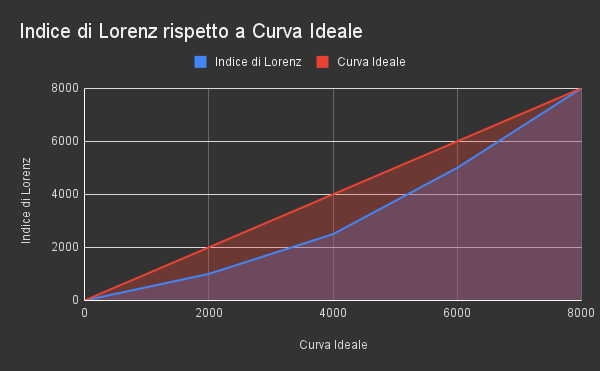

La disuguaglianza economica di un paese viene misurata con l' indice di Gini.
Il coefficiente di Gini è il rapporto tra due aree, definite rispettivamente dalle ricchezze di ogni singolo individuo.
Per spiegare come viene calcolata la curva, è utile avere un esempio
Nome e Cognome
Ricchezze
Indice di Lorenz
Indice ideale
Mario Rossi
1000€
0€
0€
Franco Casati
1500€
1000€
2000€
Alessandra Fulgenzi
2500€
2500€
4000€
Tiziana Rossi
3000€
5000€
6000€
Tommaso Rossi
6000€
8000€
8000€

Data una serie di individui, li si ordina secondo ricchezza crescente, poi per ognuno si sommano tutte le ricchezze degli individui precedenti nella tabella.
In questo modo si ottiene una somma progressiva che racchiude la ricchezza totale fino a quel determinato individuo.
In un insieme di persone dove ognuno ha lo stesso livello di ricchezza, la curva ottenuta con questo procedimento è una linea retta.
Nel grafico precedente la curva ideale è in rosso e quella effettiva in blu. Più la curva blu è "lontana" dalla rossa, più il tasso di disuguaglianza è alto in quel determinato insieme di persone.
L' indice di Gini viene calcolato facendo il rapporto tra l'area compresa tra la curva rossa e la curva blu (ovvero tra curva teorica e curva effettiva) / area totale sotto la curva ideale;
in altre parole, A / (A + B)
Secondo World Population Review, Tra i paesi del mondo, quelli con gli indici di disuguaglianza più alti sono paesi che si trovano in Africa e in Sud America, come per esempio:
Sudafrica (0.630)
Namibia (0.591)
Suriname (0.579
Zambia (0.571)
São Tomé e Príncipe (0.563)
Quali sono gli obiettivi?
Entro il 2030, raggiungere progressivamente e sostenere la crescita del reddito del 40% della popolazione nello strato sociale più basso ad un tasso superiore rispetto alla media nazionale
Entro il 2030, potenziare e promuovere l’inclusione sociale, economica e politica di tutti, a prescindere da età, sesso, disabilità, razza, etnia, origine, religione, stato economico o altro
Assicurare pari opportunità e ridurre le disuguaglianze nei risultati, anche eliminando leggi, politiche e pratiche discriminatorie e promuovendo legislazioni, politiche e azioni appropriate a tale proposito
Adottare politiche, in particolare fiscali, salariali e di protezione sociale, per raggiungere progressivamente una maggior uguaglianza
Migliorare la regolamentazione e il monitoraggio di istituzioni e mercati finanziari globali e rafforzare l’attuazione di tali norme
Assicurare una migliore rappresentanza che dia voce ai paesi in via di sviluppo nelle istituzioni responsabili delle decisioni in materia di economia e finanza globale e internazionale, per creare istituzioni più efficaci, credibili, responsabili e legittimate
Rendere più disciplinate, sicure, regolari e responsabili la migrazione e la mobilità delle persone, anche con l’attuazione di politiche migratorie pianificate e ben gestite
Attuare il principio del trattamento speciale e differente riservato ai paesi in via di sviluppo, in particolare ai meno sviluppati, in conformità agli accordi dell’Organizzazione Mondiale del Commercio
Incoraggiare l’aiuto pubblico allo sviluppo e i flussi finanziari, compresi gli investimenti diretti esteri, per gli stati più bisognosi, in particolar modo i paesi meno sviluppati, i paesi africani, i piccoli stati insulari in via di sviluppo e i paesi in via di sviluppo senza sbocco al mare, in conformità ai loro piani e programmi nazionali
Entro il 2030, ridurre a meno del 3% i costi di transazione delle rimesse dei migranti ed eliminare i corridoi di rimesse con costi oltre il 5%